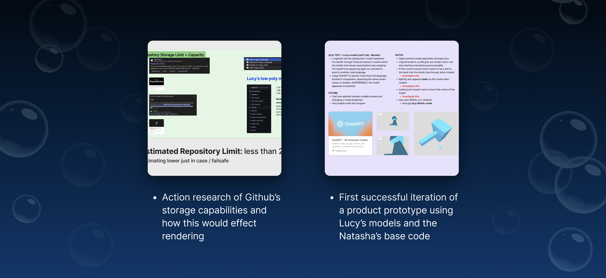
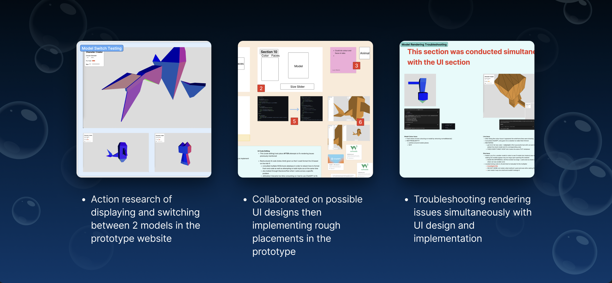
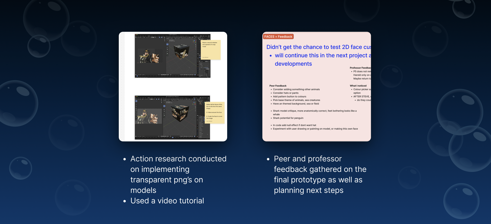
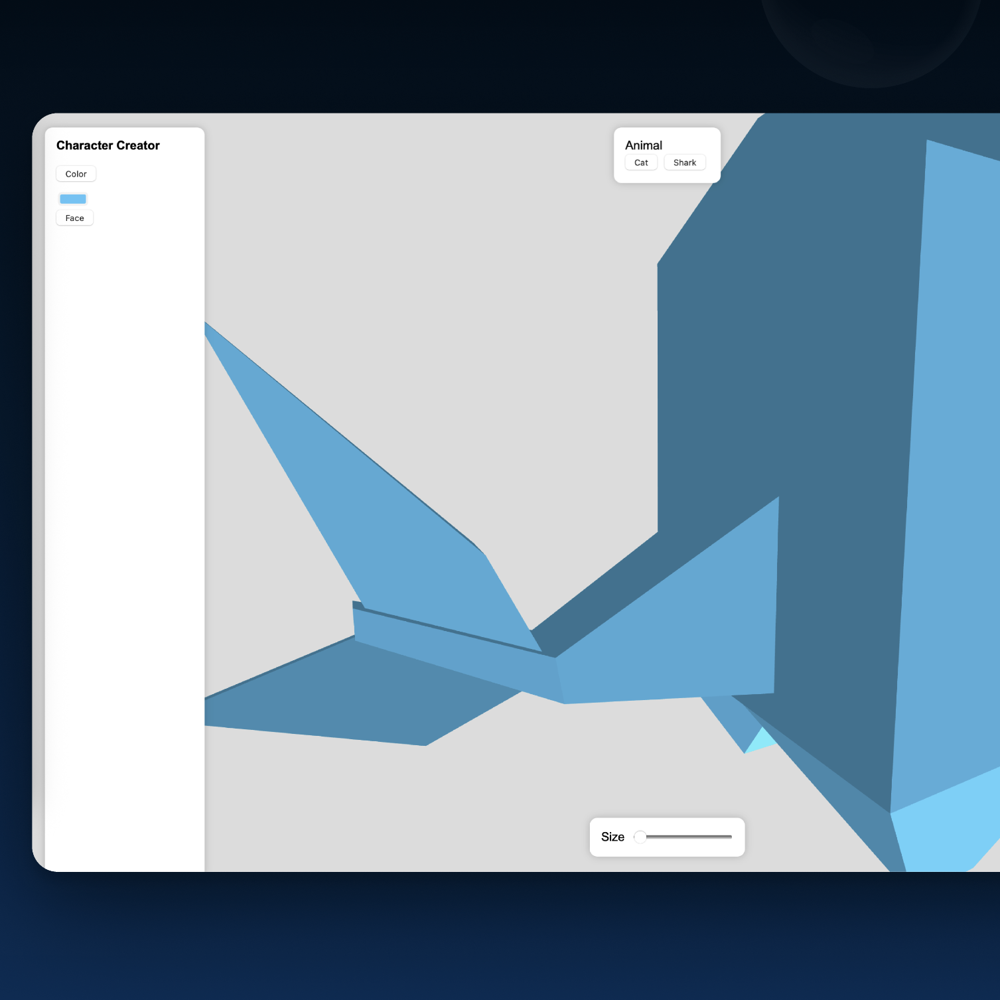

Special Topics Module 2
Research & Activity Documentation
Lucy Warren & Natasha Alvarado Dubkova
Project 2
Design Statement
In this project (Module 2) our goal was to commit to a deep dive of our chosen project path (a Character Creator: HTML code + 3D modelling) using Action Research as a research method. Our strategy was to separate in order to focus on our specific areas of research then converge in order to stay updated. This allowed us to maximize our time as we followed our path, further enhancing our learning and design. Our exploration became more strategic and deliberate, leading us to develop a cumulative prototype of our final product.
Activity 1
Research Content / Context
-
- HTML
- Conducting more thorough testing with different applications / libraries in order to determine which would ultimately support the models and final product best
- Modelling
- Creating / testing different model designs while conducting surveys in order to determine what types of animals to use / create for our final product
- Combined
- Tests / research conducted using determined code library and models


Activity 2
Collaborative Research Content / Context
-
- HTML
- Troubleshooting rendering and sizing issues in the code
- Modelling
- Implementing textures / png’s onto model surfaces for future testing before commitment
- Action research conducted with the use of multiple models implemented in the base code
- Action research conducted of final UI direction of the website
- Feedback gathered combined and reflected upon


Project 2
Project Prototype
...

Testing Action Research
...

Research Reflection
...
Next Steps
Research going forward
- Research full capabilities and limitations of p5.js
- Go back and test three.js in order to see if the rendering issues and texture rendering are possible with the help of another professor who has knowledge in this area
- Possibly develop a model design theme and research how to create / implement possible background elements / environments as well as assets
- Further develop the UI design and capabilities
- Solidify code library choices as well as create a stable render that as user can freely create a lightly customizable character
- Create a final product or high-fidelity prototype that functions smoothly
Powered by w3.css